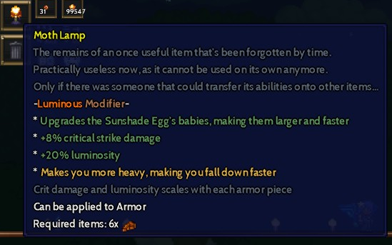
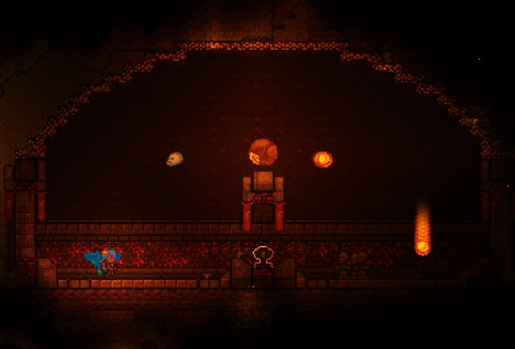
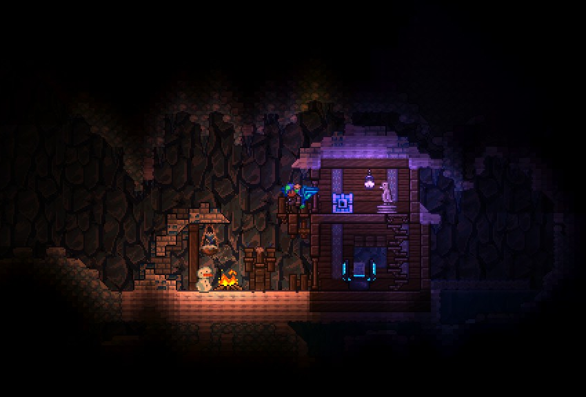
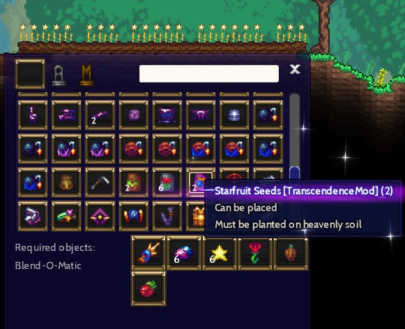

Return to Main.html
Return to Main.html
The fourth progress report for my Terraria content mod, the Transcendence Mod.
It's been a while, hasn't it?
I haven't really had the time and motivation to work on the mod,
but that doesn't mean that it'll be cancelled !!
I'll try to work on the mod every now and then,
which means that the mod will unfortunately take longer to release.
The mod has more than enough content right now, so from now on
I will polish or cut current features in the mod.
A new Post-Moonlord boss fought before Project Nucleus and Celestial Seraph
Modifiers will now be exclusive to armor pieces and tools to differentiate them from reforges

The crystals in Lower Heaven will now emit radiation
Consume a Crystal Radiation Pill to protect yourself!


Focus will now also be used for certain other mechanics,
like dashing or certain accessories' effects
Parrying will now activate within the first 15 frames of the shield being raised
instead of the previous final 5 frames
Used for creating advanced metals
(Please note that this isn't all of them)
Can't find that one place? Compasses got you covered!
I don't really know why I decided to spend my time making this,
but it's here now.
